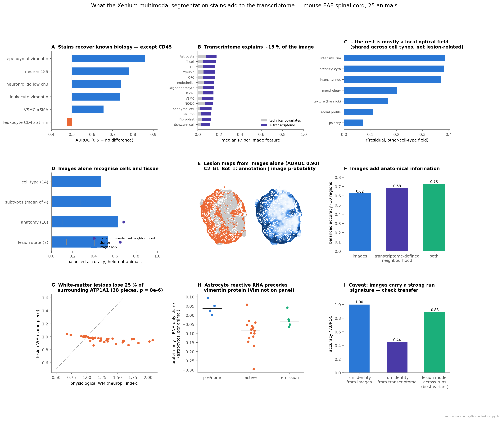
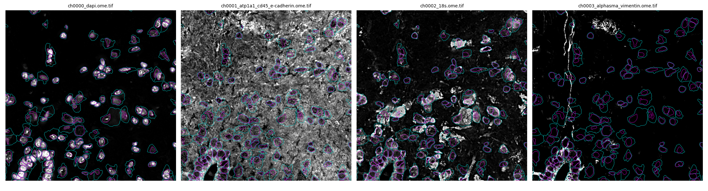
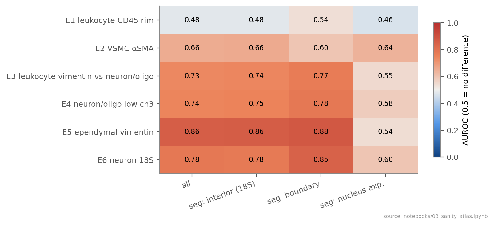
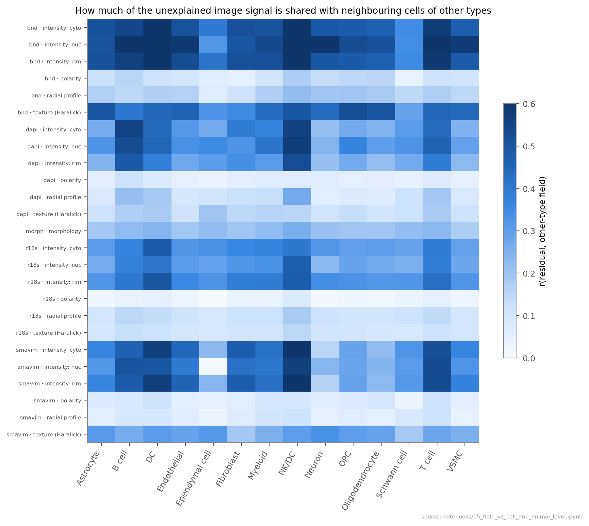
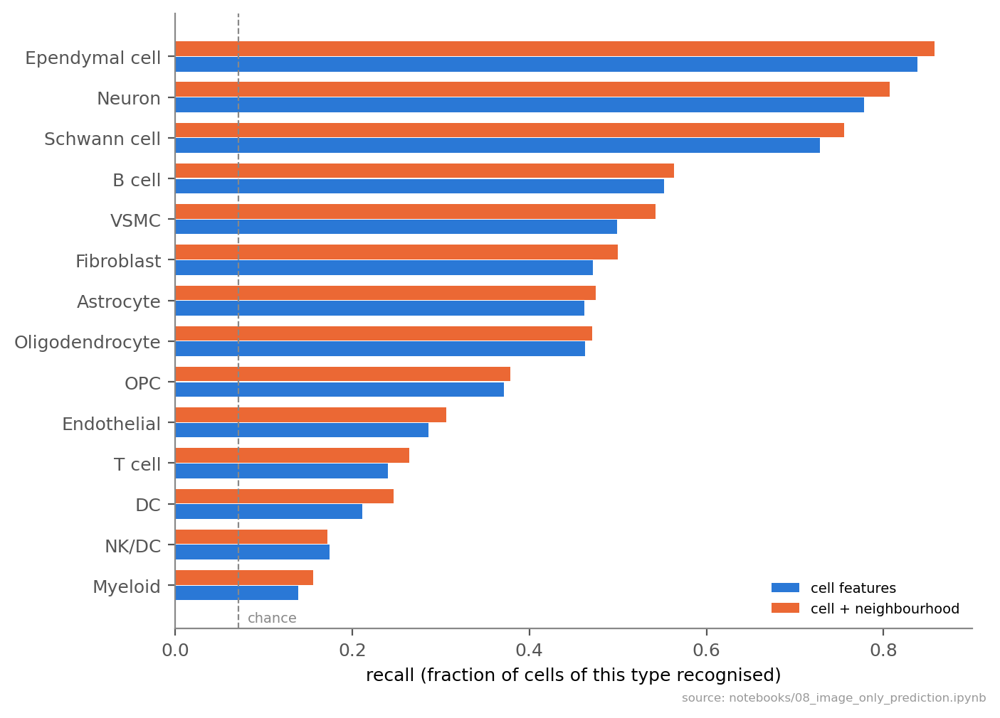
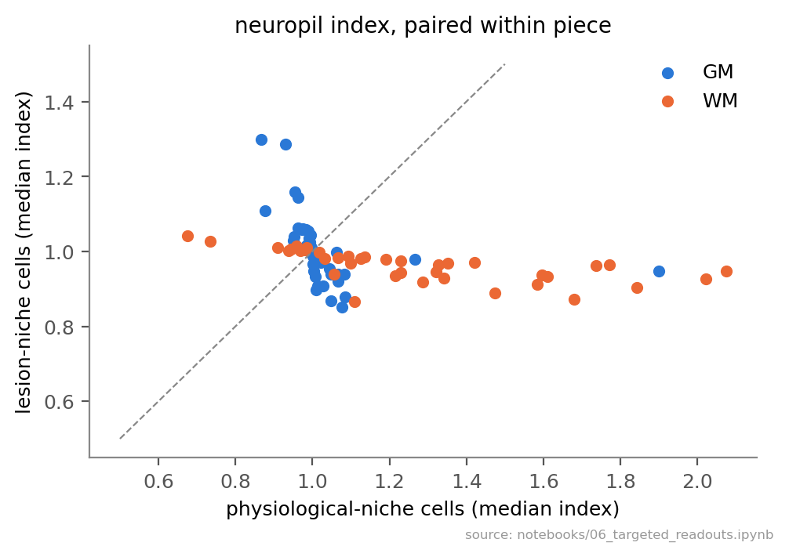
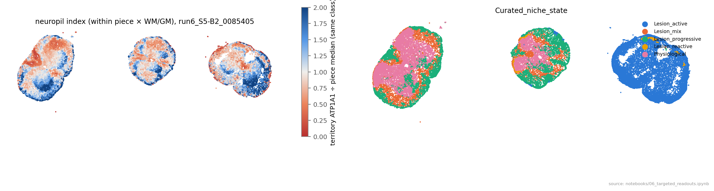

Status 8 October 2026: written before later controls. Since then, the white-matter neuropil loss was narrowed to the grey/white-matter border, the T-cell 18S polarity was withdrawn, and headline prediction numbers are cross-run (leave-one-run-out). The current one-page summary is BeyondBoundaries_verdict.pdf.
What does the Xenium multimodal segmentation kit tell us that the transcriptome doesn't?
The segmentation stains add three kinds of information: per-cell protein for genes the 5K panel doesn't contain, tissue context around each cell, and enough signal to recognise cells and map lesions from images alone, across imaging runs. They do not reveal hidden cell states.
- Protein the panel can't measure. Vim, Acta2 and Atp1a1 are not on the panel. The stains recover known biology in every animal and show that astrocyte reactive transcription precedes vimentin protein.
- Tissue context. White-matter lesions have 25 % less ATP1A1 neuropil around each cell (p = 8×10⁻⁶). Corrected 8 October: matched for distance to grey matter the loss is ~15–20 % and confined to lesions within ~75 µm of grey matter (notebook 20, section 9). Images add anatomical information to the transcriptome (0.68 → 0.73).
- Images alone, held-out animals. Cell type 46 % (14 types, chance 7 %). Lesion maps reach AUROC 0.90, and a model trained on one run maps lesions in the other at 0.87–0.90.
- Not added. CD45 is undetectable in mouse cord. For lesion identity and clinical score the images are informative but redundant with RNA. ~85 % of image variance isn't explained by the transcriptome, but that part is mostly a local optical/staining field, not biology.
Code: src/beyondboundaries · notebooks notebooks/00–09 (paired percent scripts in notebooks/py/) · running log RESULTS.md · figures results/<notebook>/ · full summary report/BeyondBoundaries_summary.pdf · lab-meeting deck report/slides/.

1Data and approach

- Data. 25 Xenium bundles (XOA 4.0, fresh frozen, 0.2125 µm/px), 18 with annotation (500,379 cells; 19 L1 / 42 L2 cell types; curated lesion niches). Each image holds 2–3 tissue pieces from different animals. The statistical unit is the animal; cross-validation is grouped by animal throughout.
- Features. Per cell and channel: mean/percentile intensity in nucleus, cytoplasm, rim and an outer ring, territory intensity, Haralick texture, radial profile, polarity, plus shape (201 columns; mask areas match Xenium exactly; 0 truncated cells).
- Normalisation. Local background subtraction (σ 25 µm, cell-free tissue), then per image (x − bg) / p90 of physiological-niche cells. Per-piece scaling was rejected because piece intensity tracks disease.
- Segmentation. ~95 % of cells were segmented by 18S (interior), 0.5–4 % by the boundary stain, 2–3 % by nucleus expansion. Main analyses use 18S-segmented cells, with all cells as a sensitivity check.
- Models. Ridge (image ↔ transcriptome, 50 PCs fitted in-fold), gradient-boosted trees (image-only prediction), leave-one-animal-out at animal level, and cross-run transfer (train run5 → test run6 and the reverse).
2Do the stains measure what they claim?
Known biology is there in every animal; CD45 is not. VSMC αSMA (AUROC 0.66), leukocyte vimentin (0.73), low ch3 in neurons/oligodendrocytes (0.74), ependymal vimentin (0.86) and neuronal 18S (0.78) all hold in 25/25 animals and in boundary-segmented cells. Leukocytes are not brighter at the rim in the boundary channel (0.48), even where the neuropil is dimmest (0.41–0.49). In mouse spinal cord that channel behaves as ATP1A1 only.
Segmentation method shifts shape features strongly (boundary-segmented: outer radial bin +10 SD; nucleus expansion: solidity +6 SD). The between-type pattern is kept for 18S-segmented cells (r 0.998), hence the restriction.

3How much of the image is new — and what is it?
The transcriptome explains little of the image. Median R² (covariates + transcriptome) per feature is 0.11–0.18 across 14 cell types (transcriptome-unique ΔR² 0.06–0.10). Best explained are morphology (nucleus:cell ratio ΔR² 0.40–0.47) and rim/cytoplasm intensity; least are polarity, radial profile and territory intensity.
The unexplained part is mostly optics. A cell's residual correlates with the mean residual of the 30 nearest other-type cells (rim/cyto/nuclear intensity r 0.37–0.39). This field follows local background (ATP1A1 glow into nuclei, ρ = −0.55), not lesion distance (ρ ≈ 0). The cell-specific remainder shifts with lesion state in only 19/924 tests (~0.1 SD). Residual clustering finds no discrete hidden states.
In reverse, images predict transcriptional state. Neuron PC1 R² 0.75 (neurofilament genes), astrocyte PC1 0.59 (C3, Gfap vs Slc6a11, Aldoc), oligodendrocyte PC1 0.43.

4What images alone can do
Cell type without a single transcript: 46 % balanced accuracy over 14 types (chance 7 %; 44 % from the cell alone, 46 % with image neighbourhood). Ependymal 0.86, neuron 0.81 and Schwann 0.76; immune cells are poor (myeloid 0.16, T 0.26) because there's no CD45. Errors stay within lineage.
Subtypes: neurons 0.64 (chance 0.33; cholinergic 0.72), astrocytes 0.60 (reactive 0.68), myeloid 0.53 (microglia 0.72), oligodendrocyte lineage 0.47. Per stain, every channel carries identity (0.21–0.27 alone; all except 18S 0.40), so this isn't an artefact of the 18S masks.
Anatomy (10 regions): images 0.63 vs transcriptome cell-type composition 0.68; both 0.73, so images add anatomical information. Lesion state (7 classes): images 0.54, transcriptome 0.65, both 0.67.


Does it survive a new imaging run?
Yes. Images identify their run with 100 % accuracy (transcriptome 44 %), so a model could lean on run-specific properties. Trained only on run5 animals, the lesion model maps run6 at AUROC 0.90 (median per animal 0.91, 6 animals); run6 → run5 gives 0.87 (19 animals). Within-run CV gives 0.90. Cell type transfers too (0.42–0.45 vs 0.46). Ranking features within each image doesn't help (0.86–0.87), so per-image normalisation is enough. Caveat: two runs from one batch.

Animal level: clinical score from images ρ 0.62 (transcriptome 0.79, both 0.76); chronic-phase day of sacrifice 0.52 vs 0.84. Sex is not predictable (negative control). Images are informative about disease but redundant with RNA.
5Biology only the images show
5.1 White-matter lesions lose neuropil
WM lesion cells have 25 % less surrounding ATP1A1 than physiological WM of the same piece (38 pieces, p = 8×10⁻⁶); grey matter shows no difference (45 pieces, p = 0.62). This is tissue damage that a cell's own transcriptome can't carry. It's highest in ventral/dorsal rim OL niches and not related to clinical score.


5.2 Astrocyte reactive RNA precedes vimentin protein
Protein score (vimentin channel) vs RNA reactivity across 47,062 astrocytes: ρ = 0.48 (C3 0.50, Serping1 0.39, Gfap 0.38; homeostatic Slc6a11 −0.44). RNA-only astrocytes (reactive transcription, quiet vimentin) are 95 % in lesions and peak in active disease (PEAK1 20 %, PEAK2 17 % vs CFA 3.5 %), falling in remission (active vs remission p = 0.019). Reactive transcription comes before the protein. Vim is not on the panel, so only the stain shows this.

5.3 18S rRNA: activation
18S rises in activated cells in lesions beyond their RNA content. After adjusting for transcript density: Schwann +0.83, endothelium +0.39, homeostatic astrocytes +0.39 SD. The oligodendrocyte drop (−0.14) disappears (+0.04), so it reflects RNA-content loss.
Withdrawn: "perivascular T cells orient their 18S towards the vessel." A later brightness-matched control (notebook 19) showed T cells point their 18S more at an equally bright non-vessel neighbour at the same distance than at the vessel. Measured relative to the cell's own nucleus, nothing vessel-specific remains. The signal is bleed from 18S-bright neighbours plus lopsided outlines of small cells; polarity readouts of small cells next to bright neighbours should not be used.
5.4 Candidate severity marker: 18S texture (needs replication)
Smoother, less punctate 18S in sicker animals in six cell types (ρ 0.37–0.76). It holds when comparing animals within the same section (ρ 0.53–0.86) and after adjusting for crowding (0.41–0.81). DAPI texture under the same optics doesn't follow. Possible causes: ribosome redistribution, RNA degradation in inflamed tissue, or animal-level tissue handling.

6How to use the segmentation stains
| Use them for | Don't use them for |
|---|---|
| Vimentin / αSMA / ATP1A1 protein (targets missing from the panel) | CD45 / immune membrane (undetectable in mouse cord) |
| Tissue context: neuropil loss, anatomy, lesion maps from images | Replacing the transcriptome for lesion identity or severity |
| Protein-vs-RNA timing (e.g. astrocyte reactivity) | Cell polarity from DAPI or αSMA/Vim (optical bleed) |
| Per-cell 18S as a ribosome / activation readout (adjusted for transcript density) | Pooling raw feature values across runs (models transfer; raw values carry a run signature) |
| QC: segmentation method, spill-over-prone neighbourhoods | 18S distribution features as biology in 18S-segmented cells |
Key numbers
| Question | Images | Transcriptome | Both |
|---|---|---|---|
| Cell type, 14 L1 (balanced acc.; chance 0.07) | 0.46 | — | — |
| Anatomical region, 10 (balanced acc.; chance 0.10) | 0.63 | 0.68 | 0.73 |
| Lesion state, 7 (balanced acc.; chance 0.14) | 0.54 | 0.65 | 0.67 |
| Lesion vs physiological (AUROC) | 0.90 | 0.92 | 0.93 |
| …trained on one run, tested on the other (AUROC) | 0.87–0.90 | — | — |
| Clinical score per animal (ρ, held-out) | 0.62 | 0.79 | 0.76 |
| Imaging run identity (acc.) | 1.00 | 0.44 | — |
| Sex (negative control) | 0.25 | — | — |
| Image-feature variance explained by covariates + transcriptome (median R²) | 0.11–0.18 | ||
Transcriptome inputs for anatomy/lesion are the cell-type composition of the 15 nearest cells (lesion niches are transcriptome-defined, which favours the transcriptome).
Caveats
- Lesion niches are defined from the transcriptome, so image-vs-RNA comparisons for lesions are tilted towards RNA.
- αSMA and vimentin share one channel; a minority of "protein-only" astrocytes sit next to VSMCs (7 % within 10 µm vs 1.5 %).
- 18S drew ~95 % of the cell masks, so 18S distribution features are partly by construction.
- 25 animals, only two CFA control pieces, two imaging runs from one batch; runs 1–3 have no accessible raw images yet.
Next steps
- Replicate on runs 1–3 (P drive): 18S texture marker, WM neuropil loss, astrocyte RNA → protein lag, and cross-run transfer of the image models.
- Separate vimentin from αSMA (VSMC-adjacent subset) and check CD45 antibody mouse reactivity with 10x.
- Feed the neuropil-loss index and per-cell 18S into the RRMAP2 lesion/niche analyses as image-derived covariates.